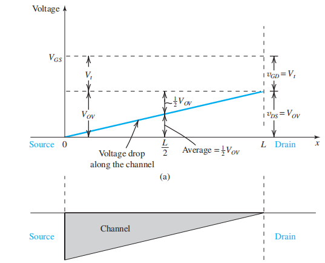

三极管与FET的工作原理浅谈
关于BJT和FET的原理，若要从半导体物理从头讲起，是非常复杂的，在本部分也不会涉及。即使是完全按照《Microelectronics Circuits》这本书的内容来讲，也非常复杂，涉及许多公式。所以在笔者所修读的电基课程中，关于BJT与FET原理的介绍，仅是浅浅带过；单从电路分析的角度看，笔者也认为没有必要对原理有一个比较详细的描述：得到一个简化的大信号与小信号的电路等效模型其实更为重要。然而，既然这是随笔，我觉得还是有必要浅谈一下，了解原理也对理解电路模型的推导有帮助。
当然，这只是浅谈，或者说，只是笔者想用自己的理解去解释《Microelectronics Circuits》关于BJT与FET原理介绍的部分。（因为原书的表述过于全面，笔者想做的是用一种更为通俗的方式让大家理解为什么BJT和FET可以构建起电流与电流/电压与电流间的线性关系：既不涉及过多的公式推导，又能让大家理解本质）关于详细的介绍，笔者强烈建议自己去看书：这里的理解更有可能是误人子弟。
1.一点点半导体物理
1.1 pn结
p区Si中掺杂Al，使得产生空穴；n区Si中掺杂P。使得产生自由电子。由于空穴和自由电子在pn两区的浓度差，会发生扩散运动。由图所示，在耗尽层内部存在内电场，会发生漂移运动，漂移运动相比于扩散运动影响很小，可以忽略。内电场的方向阻碍空穴和自由电子的扩散运动。
当pn结正偏（n区电势低于p区），耗尽层减小，内电场的阻碍作用减弱，扩散作用加剧，pn结导通；当pn结反偏（n区电势高于p区），耗尽层增大，内电场的阻碍作用加剧，扩散作用减弱，pn结不导通。
1.2 电流密度与浓度梯度的关系
下图是一个pn结中，耗尽层外p区n区的少子分布函数图像。

直观上想，因为只考虑空穴和自由电子的扩散运动，所以，电子与空虚运动所产生的电流密度主要与扩散运动有关，因为扩散运动与浓度梯度差有关，所以也就是与自由电子与空穴的浓度梯度有关。浓度梯度差越大，电流密度就越大。浓度梯度反映在浓度分布图（如上图所示）上，就是曲线的斜率。因此电流密度与斜率成正比：（以n为例）
所以某一点的电流也与曲线斜率成正比：

p电流同样满足类似的表达式。
1.3 浓度表达式
通过半导体物理知识（不推导），可以知道浓度分布曲线表达式：
所以
联系1.2里电流的表达式，由于e^x求导的特殊性，可以得到I_n与（e^{V/V_T}-1）成正比关系，若V>>V_T，则可以认为I_n、I_p与e^{V/V_T}成正比。
2. BJT
这里以npn为例：
当EBJ正偏、CBJ结反偏时，BJT工作在放大区。此时BJT的核心工作是，使得i_e和i_c成一定的比例关系，即两个pn结的电流成比例关系。从1.3可知，通过建立i_e和i_c的比例关系，我们可以通过控制v_{be}来控制电流。为了达成这一目的，三极管的三个结有着各自精巧的设计：
- E极：发射极重掺杂（heavily doped），使得E极的自由电子浓度极大。
- B极：基极掺杂程度很轻（lightly doped），使得B极的空穴浓度远小于E极的自由电子浓度。基极还非常薄，这一点对于两个pn结的电流成比例关系至关重要。
- C极：集电极面积非常大。
至于为何会有这样的设计，下面将通过工作原理说明。
BJT工作在放大区时，由于E极电子浓度非常高，在浓度梯度的作用下，E极的自由电子将向BC方向移动，从而形成电流。由于B非常薄且CBJ反偏，大多数移动到B的电子将会进一步移动到C极（一小部分会在B极与其空穴复合），从而形成电流i_c。B中的空穴浓度大于E与C中，由于BCJ反偏，所以B中的空穴只会定向移动到E中，从而也形成一小部分电流，这也使得i_e略大于i_c。
由于BCJ反偏，所以BCJ里BC交界处没有自由电子，交界处B少子浓度为0（由于BCJ反偏，B中的自由电子在电场作用下全部到C里去了，这也就是为什么C的面积要大足以存下所有移动过来的自由电子）。于是我们可以画出BJT的少子分布浓度图。
由图可知，在B区，由于非常薄，其浓度分布曲线近似可以看作一条直线。由1.2中的讨论可知，电流大小与浓度分布图的斜率的成正比。因此，我们可以认为电子形成的电流为：
由于C区的电流主要来源于电子的移动，所以可以认为i_c=I_n。
于是通过将B区浓度梯度曲线近似为直线的方式我们将i_c与n_p(0)建立起了线性关系。由1.2与1.3可知，n_p(0)与e^{v_{be}/V_T}成正比，也因此与EBJ的电流i_e成正比。i_c与i_e建立起了线性关系。
所以，整个BJT的工作关键，就是通过将B做的非常薄的方式，使得i_e可以用v_{be}去控制。
换个角度看，我们将i_e看作是I_{ne}和I_p的加和；将i_c看作是I_{nc}。由于B很薄，浓度分布曲线看作直线，可以得到I_{nc}=I_{ne}。从这个角度看，由于B的特殊构造，使得I_{nc}=I_{ne}（也就使得可以通过i_e去控制i_c）；同时，又因为I_{ne}和I_p都与e^{v_{be}/V_T}成正比，所以i_e与i_c成正比。
综上，要使得BJT得以在放大区工作，必须满足：
- B区做的非常薄
- EBJ正偏、CBJ反偏
3.FET
FET的全称是Field-effect transistor，即场效应晶体管。顾名思义，是利用电场来控制晶体管的工作。考虑一个平行板电容器，电场越大，自由电荷越多：让这些自由电荷运动起来就能形成电流。
下面以n沟道增强型MOSFET为例：
工作时，SB两级相连接地。此时我们先不施加v_{DS}。随着v_{GS}变大，p中的空穴将会不断向下面的衬底运动，使得耗尽层不断变大并向下移动；与此同时，两测n中的自由电子也会不断向p中运动，并最终成一个n沟道。
增大v_{GS}，当空穴电子数目相同达到平衡时，记此时的v_{GS} = v_t(\text threshold)。再增加v_{GS}，n沟道开始形成并导电。所以也称v_t为开启电压。接下来，我们记v_{ov} = v_{gs} - v_t。

值得注意的是，此时实际在G极上形成了一个电容：G的金属板与下面形成的沟道形成了一个平行板电容器。根据电容的定义式，我们可以写出自由电子的数目：
其中C_{ox}记为栅氧电容，即单位面积的平行板电容大小。W是沟道宽度、L是沟道长度。
当n沟道形成后，再增加v_{DS}，自由电子就会开始移动，形成电流。然而，请注意，因为此时D也有了电势，这就使得v_{GS}与v_{DS}不同，也就使得两端导电沟道不对称。
电压差如下图所示：
单位长度的电荷量则可以表示为：
由于v_{DS}的存在，横向方向在沟道存在一个电场。电厂的大小为：
电子漂移运动速度：
运用i=qE:
其中k^{'}_{n}=C_{ox}\mu_n.
当v_{DS}达到V_{OV}时，沟道右侧由于电压原因将会变成如下图:

此时，电流达到最大值：
所以i_D随v_{DS}图像可以表示为如下图：

综上所述，FET的作用就是通过形成的电容中的电场来控制自由电荷的数目，从而控制电流大小。
4.总结
无论是BJT还是FET，都是通过特定的构造可以使得通过一端电压/电流去控制另一端电压/电流，使得两者建立不为这两者本身变化的关系。这是后续放大电路建立的前提。至于如何使这个关系从非线性变为线性，则是我们下一篇随笔的内容了：小信号。